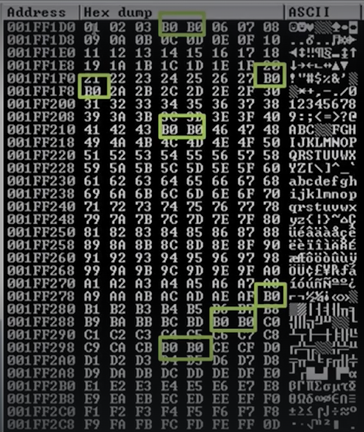

badchars - https://github.com/cytopia/badchars

So here are no bad characters (i.e. to find if something is out of place or missing)
How to figure out the bad characters here ?_?
- B0 char is ok as a character
- For Consecutive character's all you have to worry about is the 4 here the 5 here is not a bad char.
